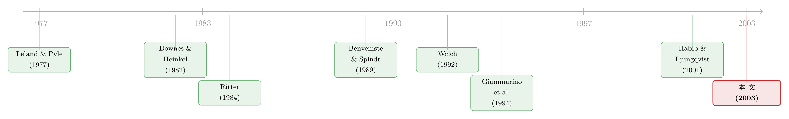

招股书里那本「公开的暗账」：内部人如何把卖股票的坏消息藏起来
本文读的是 Ang & Brau (2003, Journal of Financial Economics)：当公司上市时，内部人（insiders）顺手卖掉自己手里的老股，本是一个人尽皆知的坏信号。但作者用 1980–1997 年 1,837 家发行二级股（secondary shares）的 IPO 发现，内部人会用两手「障眼法」把这个坏信号藏起来——先在最显眼的招股书里少报要卖的股数，再到没人看的修正案里悄悄补回来；而且当他们加卖二级股时，往往同步砍掉一级股、或把它和一个「锁定期」的好信号捆在一起，让市场看不出他们究竟卖了多少。
1 一个「人人都知道」的坏消息
先从一个常识讲起。
一家公司要上市，招股书 (prospectus) 里会写明这次到底发多少股、其中有多少是公司新发的「一级股」(primary shares)，有多少是老股东自己拿出来卖的「二级股」(secondary shares)。区别很要紧：一级股卖出去的钱进公司账户，是拿来投资扩张的；二级股卖出去的钱，直接进了老股东自己的口袋。
而老股东在 IPO 时卖自己的股票，是一个经典的坏信号。这个逻辑可以追溯到 Leland and Pyle (1977)：在信息不对称的世界里，最了解公司真实价值的就是内部人，他们愿不愿意继续持股，本身就在向外部投资者「说话」。如果内部人趁上市大举套现，外人会做两个不利的推断——其一，内部人的利益和新股东不再绑在一起，可能滋生道德风险 (moral hazard)（Ritter, 1984a）；其二，IPO 本就是信息不对称最严重的场合，内部人急着出货，像极了逆向选择 (adverse selection)（Downes and Heinkel, 1982）。一句话：卖二级股会把发行价压下去。
于是矛盾出现了。内部人卖二级股的目的是给自己变现、是想多赚钱；可卖的过程却发出坏信号、把价格打下去——目的和手段彼此打架。
这正是全文的「张力」所在：一个想最大化自己财富的内部人，明知卖股票会被市场惩罚，他会怎么做？答案不是「不卖」，而是——想办法让市场看不清他卖了多少。
2 为什么偏偏挑 IPO 来研究
接着，一个自然的问题是：内部人「藏信号」的行为，凭什么能被研究者抓个现行？
作者的回答是：IPO 这个场景，简直是为「隐藏」和「混淆」量身定做的，有四个特征：
第一，它天然带着一个坏信号——卖二级股。第二，它是一个多阶段 (multi-stage) 的过程。 内部人可以在最显眼的初始招股书 (form S-1) 里先报一个较小的数字，等到临近发行、再用一份不起眼的修正案 (amendment) 把数字偷偷调上去。第三，它允许同时发出多个信号，包括好信号——比如承诺一个更长的锁定期 (lockup)，把没卖的股票锁住一段时间不动。第四，IPO 很常见，且由于美国证监会 (SEC) 的强制披露，财务信息完整可得，所以能做大样本。
把这四点串起来，作者提炼出三种内部人的「财富最大化」策略，全文就围绕这三个词反复讲透：
- 少报 (underreporting)：在初始招股书里报一个偏低的二级股数，把真实的、更高的卖股量留到后面的修正案里补。
- 掉包 (switching)：当后来要加卖二级股时，同步减少一级股，让「总发行股数」看上去没怎么变，修正案就不容易引人注意。
- 信号混淆 (signal confounding)：用一个好信号（更长的锁定期）去对冲卖二级股的坏信号——作者把这称作信号干扰 (signal jamming) 的一种极端形式（Mirman et al., 1993）。
3 识别策略：把「预谋」从「随行就市」里剥出来
然后，真正关键的一步在于：怎么证明这些行为是有意为之的隐藏，而不只是「行情变了、临时改主意」？
这里作者的设计很巧。问题在于，内部人在初始招股书和最终发行之间调整股数，可能有两种动机混在一起：
- 预谋的少报——上市之前就计划好「先少报、后补回」；
- 随行就市的调整——招股期间路演 (roadshow) 收集到了新的需求信息，内部人据此临时加卖或减卖。后者与 Benveniste and Spindt (1989) 描述的承销商「探价—定价」机制一脉相承：需求强，就抬价、就多卖。
要把第一种「预谋」干净地分离出来，作者用了一个聪明的代理变量——发行价相对于初始价格区间的修订方向，并据此把全样本切成三组需求状态：
- 强需求 (strong demand)：最终发行价高于初始申报价格区间；
- 预期需求 (expected demand)：最终发行价落在区间之内；
- 弱需求 (weak demand)：最终发行价低于区间。
这个切分的精髓在于「预期需求」这一列。当行情和当初的预期差不多时，发行价没被往上或往下推，随行就市的扰动被剔除掉了，剩下的调整就最能反映内部人「最初的真实意图」。 换句话说，预期需求组是一个干净样本 (clean sample)——如果在这一组里仍然看到系统性的「加卖二级股」，那就只能是预谋的少报，而非被行情逼出来的反应。
至于「随行就市」那一半，作者也给出了清晰的方向性预测：行情强（发行价被抬高、超过内部人对公司的估值），内部人有动机加卖二级股去攫取这份溢价；行情弱，则减卖，避免折价甩卖自己的股票——而且减卖时无需隐藏，因为「少卖」本身就是个好信号。这一套需求条件下的财富最大化逻辑，和 Habib and Ljungqvist (2001) 的内部人财富最大化模型是吻合的。
4 数据
数据来自 Security Data Company（SDC）的 New Issues 数据库。样本是 1980–1997 年间 1,837 家坚定承销 (firmly underwritten)、且申报或发行了二级股的 IPO。剔除了有限合伙、ADR、单位发行 (unit offers)、分拆上市 (carve-outs)、反向杠杆收购和封闭式基金。初始招股书里的一级/二级股数是从《Investment Dealer's Digest》(IDD) 手工采集的，申报价和发行价取自 SDC（1980–81 早期年份用 IDD 补足）。
几个能立刻说明问题的描述性数字：
- 这
1,837家占了同期符合筛选标准的全部 IPO（5,764家）的32%——也就是说，每三家上市公司里就有一家在 IPO 时夹带了老股出售，这绝非边角现象。 - IPO 发行股中，平均有
27%是二级股。 - 其中
726家（44%）在初始申报后用修正案调整过二级股数。 - 二级股占总发行股的比例，从初始申报时的
21%一路升到最终发行的49%——几乎翻倍。 - 调整的幅度有时大得惊人：单笔最大增持
21,000,000股，最大减持13,500,000股，平均增持154,617股。
最能说明「修正案是个隐蔽渠道」的，是时间：样本里发行日与紧邻它的那份修正案之间，平均只隔 6.9 天，中位数只有 3 天。 一份赶在发行前三天才递交的修正案，几乎没有投资者会回头细读——这正是隐藏得以成功的物理基础。
5 主要结果：三种障眼法，一一被抓现行
5.1 少报：预期需求那一列里的「铁证」
核心证据集中在一张 1,837 家公司的列联表 (contingency table) 里。把需求状态（强/预期/弱）和二级股调整方向（增/不变/减）交叉制表，关键的对比是：
在预期需求组（最干净的那一列），用修正案加卖二级股的公司，数量比减卖的多出 50%（24.2% vs 16.0%），在 p<0.0001 上显著。 这一组剔除了行情扰动，所以这个不对称只能解释为预谋的少报——上市前就打算「先压低、后补回」。
作者还在未报告的检验里比较了调整的幅度：用三种不同的二级股调整度量，预期需求组里二级股的增持幅度都显著大于减持幅度（5% 水平），其中两种度量下增持量是减持量的两倍以上。
至于「随行就市」的部分，方向也完全对得上：
- 行情弱时（发行价被压低），内部人减卖二级股的频率是加卖的
2.9倍（218/76）——行情不好，谁也不愿折价卖自己的股票； - 行情强时（发行价被抬高），内部人加卖的频率是减卖的
2.8倍（164/59）——行情好，赶紧多卖，把市场给的溢价装进口袋。
无条件卡方 (chi-square) 检验值高达 246.8，三个需求状态下的条件卡方分别为 67.65、320.16、64.32，全部 p<0.0001。预谋的少报和随行就市的调整，两套逻辑同时成立。
5.2 掉包：让「总股数」纹丝不动
光是少报还不够。投资者更关注「粗信息」——总发行股数变没变，而不是「细信息」——这些股里一级、二级各占多少。于是内部人有了第二招：加卖二级股的同时，对应砍掉等量的一级股，让总发行股数看上去没动，修正案就更不显眼。
作者识别出一批「完美对冲」的样本：二级股的增加被一笔等量、反向的一级股变化精确抵消。140 个这样的案例里，有 114 个落在预期需求组——因为在那里，投资者本就预期「发行价没变，发行规模也该不变」，于是内部人正好借这个预期把掉包藏进去。以「二级股变化 / 初始招股书总股数」度量，这种精确替换平均达到了发行股的 23%。
5.3 信号混淆：用锁定期这个「好信号」去捂住坏信号
第三招最精妙。卖一部分二级股是坏信号，但承诺把另一部分股票锁定更久不卖，则是个好信号（Courteau, 1995；Field and Hanka, 2001 证明了锁定期到期时市场会显著负向反应，反过来说明锁定本身被定价为正面）。Ibbotson and Ritter (1995) 也指出，投资者愿意为「内部人承诺长期锁定」的公司付更高的价。
于是预测是：当内部人在初始招股书里申报卖掉更大比例的公司（坏信号）时，他们会同时承诺一个更长的锁定期（好信号）去对冲。 这就是「信号混淆」——不是消除坏信号，而是在它旁边并排放一个好信号，把市场的判断搅浑。
6 反转：那 76 家「不听话」的公司
讲到这里，故事本该圆满了。但于是反转出现了——
在弱需求组里，明明该减卖，却有 76 家公司反而加卖了二级股。这看上去直接打脸「财富最大化」的预测：行情都差成这样了，为什么还要折价甩货？
作者没有回避，而是把这 76 家单独拎出来逐一审视。一种可能的解释是：这些公司同时调整了总股本结构，加卖二级股其实伴随着别的变动；作者还把另外 12 家「二级股不变、但在弱市里加发一级股」的公司一并纳入，确认主结论对用 76 家还是 88 家都稳健。少数反例并没有推翻主线，反而让识别显得更诚实。
7 两个「监工」和一个竞争假说
找到了隐藏与混淆的证据之后，作者顺手回答了三个延伸问题。
谁能管住内部人？ 文献里两个经典的「认证者」(certifier)——声誉好的承销商（Carter and Manaster, 1990；Megginson and Weiss, 1991 对风投的认证）和风险资本 (venture capital)（Barry et al., 1990）——按理说应该约束内部人的机会主义。但结果是：这两者对内部人使用各种隐藏策略都没有显著影响。 监工们似乎并没有真的在监工。
这是一个略反直觉、也略让人不安的发现：我们通常相信「好承销商 + 风投背书」能净化 IPO 的信息环境，但在「内部人藏卖股」这件具体的事上，它们形同虚设。
市场看不看修正案？ 作者发现，修正案里申报的二级股，对首日定价的影响显著小于初始招股书里的二级股——市场认真消化了初始申报的信息，却对修正案里的同类信息反应迟钝。这恰恰坐实了隐藏策略的前提：把坏消息挪到修正案里，确实能少挨打。
有没有别的解释？ 一个竞争假说 (competing hypothesis) 认为，内部人只是事先锁定了一个「外部股权占比」的目标，后续调整不过是为了维持这个预定水平。但数据不支持这个假说——内部人的调整是奔着「攫取溢价」去的，而非守着某个固定的占比。
（关于 IPO 里内部人如何用「保留所有权」来传递信号、又如何借折价把外人挡在门外，可参见《新股「打折」，原来是为了把外人挡在门外》；关于风投在 IPO 里到底是认证者还是反而加剧折价，可参见《「认证」的反面：原来风投把新股「打折」得更狠》。）
8 文献脉络
把这篇论文放回它所在的那条线上看，会更清楚它的位置。
最上游是 Leland and Pyle (1977)——信号理论的奠基之作，第一次把「内部人保留多少所有权」当作公司价值的信号。紧接着，Downes and Heinkel (1982) 和 Ritter (1984a) 把这套逻辑搬进了新股发行，论证了内部人出售会触发逆向选择与道德风险的不利推断。
到了 1989 年，Benveniste and Spindt 的探价 (bookbuilding) 模型，给「初始申报—收集需求—调整定价」这个多阶段过程提供了制度骨架；Welch (1992) 的信息瀑布 (cascade) 模型，则解释了为什么内部人会指望「招股书 + 路演」先制造一轮羊群效应，把后面悄悄加进来的二级股盖过去。

真正的近亲是 Giammarino, Heinkel and Hollifield (1994)：他们证明了在增发 (seasoned equity offering) 中，内部人会一边让公司发新股、一边在二级市场匿名交易，借机为自己谋利。Ang and Brau 顺着一句很朴素的话往下走——「如果有人在增发里机会主义，那为什么不会有人在 IPO 里也这么干？」——把战场从 SEO 推进到了 IPO，并且第一次把「少报」「掉包」「信号混淆」三种隐藏机制讲清楚、量出来。与之并行的 Habib and Ljungqvist (2001) 则从理论上刻画了内部人在 IPO 中的财富最大化，为本文的需求条件预测提供了模型支撑。
9 评论与延伸（Q&A + 研究方向）
(a) 几个可能的疑问
Q：「少报」和单纯的「随行就市」到底怎么区分？会不会作者把后者错当成了前者？
这正是识别的命门，作者的处理是用「预期需求」组做干净样本。当发行价落在初始区间之内、没被行情往上或往下推时，随行就市的扰动被剔除，此时仍出现的系统性加卖（
24.2%vs16.0%，p<0.0001）只能归因于预谋。当然这不是完美的实验——「价格落在区间内」并不等于「完全没有新信息」，但它确实把两种动机做了一次相当可信的切分。
Q：「掉包」靠的是「投资者只看总股数、不看一级二级的拆分」这个前提，这个前提可信吗？
作者其实给了它一个间接的支持：修正案里的二级股对首日定价的影响显著小于初始招股书里的二级股，说明市场对修正案信息本就反应迟钝。再叠加发行前 3 天才递交、几乎没人细读的事实，「投资者关注粗信息、忽略细信息」就不只是假设，而是有行为证据撑着的。
Q：好承销商和风投居然管不住内部人，这是不是和「认证假说」直接冲突？
是有张力，但未必矛盾。认证假说讲的是承销商/风投能降低 IPO 的整体信息不对称、压低折价；而本文问的是一个更细的问题——它们能不能阻止内部人在申报与修正之间做手脚。两者完全可以并存：承销商愿意为公司质量背书，却没有动机（甚至没有义务）去戳破内部人卖了多少股这种对发行本身无害的「小动作」。
Q：那 76 家弱市里逆势加卖的公司，会不会才是真相，而主结论只是平均数掩盖了异质性？
这是最该追问的反例。作者把它们逐一查验，并发现主结论对纳入
76还是88家都稳健。但坦白说，论文对「这 76 家究竟在干什么」给的解释偏薄——它们可能是流动性压力、可能是特定股东的退出约束。这是一个被诚实承认、却没被彻底解释干净的尾巴。
Q：这篇 2003 年的论文，结论今天还成立吗？
机制层面大概率仍在，但程度可能变了。样本止于 1997 年，之后 EDGAR 电子披露普及、机构投资者和卖方研究对修正案的扫描能力大幅提升，「把坏消息藏进修正案」的隐蔽性应该被削弱了。这本身就是一个值得用更近样本重做的实证问题。
Q：内部人「少报」难道不算误导性披露、不会被 SEC 追究吗？
关键在于，少报并不违法——初始招股书报一个数、修正案再报一个更高的数，每一步都符合披露规则。论文研究的恰恰是这种完全合规的策略性披露：内部人没有撒谎，只是选择了「在哪里、何时」把真话说出来。这也是它比「财报造假」类研究更微妙的地方。
(b) 几个可能的研究问题与提案
1. 把样本拉到 EDGAR 时代，看「修正案隐蔽性」是否衰减。 【经济故事】如果电子披露和算法扫描让修正案不再「无人细读」，那么少报与掉包的收益就会下降，内部人应当减少使用，或转向更隐蔽的渠道。这是对本文机制的一次直接的「时代检验」。 【可行性】高。EDGAR 全文可得，S-1 与各号修正案的二级/一级股数可结构化抽取，识别上可用 EDGAR 强制电子申报的分阶段推行做准 DiD。数据与设计都现成。
2. 把「信号混淆」从 IPO 搬到公司债市场。 【经济故事】债券发行同样充满坏信号（如发债去分红、去回购），发行人是否也会用「好信号」（如缩短期限、增加抵押、设更严的契约）去对冲？这是把本文的「混淆」逻辑迁移到信用市场的自然延伸。 【可行性】中。Mergent FISD 提供契约条款，发行文件可从 EDGAR 取；难点在于为债券找到一个像「锁定期」那样干净、单维的好信号代理。
3. 外资持有人是不是更好的「监工」？ 【经济故事】本文发现本土的承销商和风投管不住内部人。一个自然的问题是，对披露更敏感、跨市场比较经验更丰富的外国机构投资者，会不会更能识破少报与掉包，从而压缩内部人的隐藏空间？ 【可行性】中。需要 IPO 后的机构持股明细（如 13F 加国别标注）与跨国可投资度数据；识别上可借助指数纳入或 QFII 类额度变化作为外资进入的外生冲击。
4. 给「掉包」装一把机器可读的尺子。
【经济故事】本文的「精确对冲」是人工识别的 140 个案例。若能用 NLP 把每一号修正案里一级/二级股的逐笔变动自动抽取、刻画整条调整路径，就能把「掉包强度」做成一个连续变量，进而研究它与首日折价、长期收益的关系。
【可行性】高。纯文本工程，EDGAR 数据充足，是一个低门槛、可直接产出新度量的方向。
10 我的判断
这篇论文的贡献在于：它没有去发明一个新的信号，而是抓住了一个人尽皆知的坏信号（卖二级股），然后极其细致地展示了内部人如何在完全合规的前提下，用「少报—掉包—混淆」三招把它系统性地藏起来。它的识别策略——用「预期需求」组分离预谋、用修正案与发行日的 3 天间隔坐实隐蔽渠道、用首日定价的差异反应验证隐藏前提——环环相扣，是把一个看似无法观测的「意图」做实的范本。
我对识别的主要担心有两处。其一，「发行价落在初始区间内 = 没有新信息」这个等式偏强，预期需求组里仍可能残留未被价格修订吸收的信息，使「预谋」被高估。其二，承销商与风投「无效」的结论是基于横截面相关的，缺乏外生变动，很难排除是「内部人会藏的公司本就挑了不爱管事的承销商」这类匹配内生性。
后续我最想看到的，是把这套机制放进电子披露普及之后的样本里重做一遍——如果修正案的隐蔽性已被技术抹平，那么内部人的「藏」会消失，还是会演化出新的形态？这个问题的答案，恐怕比 2003 年的原结论更有意思。
参考文献
- Ang, J. S., Brau, J. C. (2003). Concealing and confounding adverse signals: insider wealth-maximizing behavior in the IPO process. Journal of Financial Economics 67(1), 149–172.
- Barry, C., Muscarella, C., Peavy, J., Vetsuypens, M. (1990). The role of venture capital in the creation of public companies: evidence from the going-public process. Journal of Financial Economics 27(2), 447–471.
- Benveniste, L., Spindt, P. (1989). How investment bankers determine the offer price and allocation of new shares. Journal of Financial Economics 24(2), 343–361.
- Carter, R., Manaster, S. (1990). Initial public offerings and underwriter reputation. Journal of Finance 45(4), 1045–1068.
- Courteau, L. (1995). Under-diversification and retention commitments in IPOs. Journal of Financial and Quantitative Analysis 30(4), 487–517.
- Downes, D., Heinkel, R. (1982). Signaling and the valuation of unseasoned new issues. Journal of Finance 37(1), 1–10.
- Field, L., Hanka, G. (2001). The expiration of IPO share lockups. Journal of Finance 54(2), 471–500.
- Giammarino, R., Heinkel, R., Hollifield, B. (1994). Corporate financing decisions and anonymous trading. Journal of Financial and Quantitative Analysis 29(3), 351–377.
- Habib, M., Ljungqvist, A. (2001). Underpricing and entrepreneurial wealth losses in IPOs: theory and evidence. Review of Financial Studies 14(2), 433–458.
- Ibbotson, R., Ritter, J. (1995). Initial public offerings. Handbooks in Operations Research and Management Science 9, 993–1016.
- Leland, H., Pyle, D. (1977). Informational asymmetries, financial structure, and financial intermediation. Journal of Finance 32(2), 371–387.
- Megginson, W., Weiss, K. (1991). Venture capitalist certification in initial public offerings. Journal of Finance 46(3), 879–903.
- Mirman, L., Samuelson, L., Urbano, A. (1993). Duopoly signal jamming. Economic Theory 3(1), 129–149.
- Ritter, J. (1984a). Signaling and the valuation of unseasoned new issues: a comment. Journal of Finance 39(4), 1231–1237.
- Welch, I. (1992). Sequential sales, learning, and cascades. Journal of Finance 47(2), 695–732.